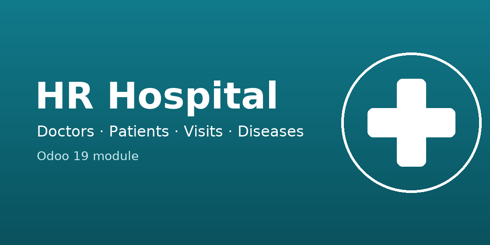

HR Hospital is a training module for Odoo 19 that models the daily work of a small clinic: doctors and their interns, patients with personal doctors, scheduled and completed visits, a hierarchical disease catalogue and the history of personal doctor changes.
| Group | Visits |
|---|---|
| Patient | Reads only own visits |
| Intern | Reads and edits only own visits |
| Doctor | Reads and edits own visits and the visits of own interns |
| Manager | Sees all visits and books new ones, cannot delete |
| Administrator | Full access |
Author: Denys Rsh · License: OPL-1